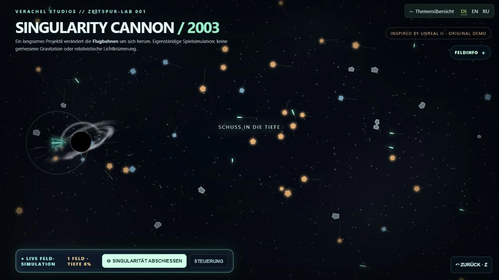

ASTRALIS · begehbare Spielwelt
Fliegen, Portale öffnen und Bewohnern begegnen. Ein nativer C++-Prototyp in Unreal Engine.
Für spielbare Raumkonzepte und interaktive Ausstellungen.
Spielwelt & Entwicklungsquellen ↗JURI / PROJEKT HALVETH
Ich entwickle Spielwelten, Browserwerkzeuge und Lernangebote. Probiere sie aus und öffne den Code.
 NATIV · C++ / UNREALASTRALIS · begehbare SpielweltSpielwelt & Entwicklungsquellen ↗
NATIV · C++ / UNREALASTRALIS · begehbare SpielweltSpielwelt & Entwicklungsquellen ↗
BROWSER · INTERAKTIONSCARLET · ein Feld reagiertIm Browser ausprobieren ↗ MODELL · PERSPEKTIVEENDECK · Bild und Raum unterscheidenPerspektive selbst verändern ↗
MODELL · PERSPEKTIVEENDECK · Bild und Raum unterscheidenPerspektive selbst verändern ↗Aufnahme aus der nativen Entwicklungsfassung. 5c2260f ↗
HIER DIREKT AUSPROBIEREN
Bewege die Zeit: Links fallen vier Bildpunkte zusammen. Rechts bleibt ihre Tiefe sichtbar.
Das ganze Experiment öffnen ↗Geometrisches Modell aus ENDECK. Die Ansicht prüft die festgelegten Regeln; sie misst keine reale Raumzeit.
Vier Identitäten bleiben erhalten. Verändere die Modellzeit und vergleiche beide Ansichten.
Modellcode dieser Version · 8d6d53b ↗Was daraus wird
Fliegen, Portale öffnen und Bewohnern begegnen. Ein nativer C++-Prototyp in Unreal Engine.
Für spielbare Raumkonzepte und interaktive Ausstellungen.
Spielwelt & Entwicklungsquellen ↗Ein Projektil verändert die Bahnen im Feld. Steuerung, Rücknahme und sichtbare Zustände greifen ineinander.
Für interaktive Produktdemos, Webgrafik und spielerische Erklärungen.
Im Browser ausprobieren ↗Vier Punkte, zwei Ansichten: eine Projektion kann verschiedene Raumorte verdecken. Mit Zeitregler und Gegenproben.
Für Kamera-Debugging, technische Lernangebote und verständliche Modellvergleiche.
Perspektive selbst verändern ↗AUSGEWÄHLTE TECHNISCHE ARBEITEN
Webanwendung
Ein Lernkatalog mit Übungen zu digitalen Grundlagen, Programmierung und Mathematik. Ohne Pflichtkonto lesbar.
Prüfstand: Quellcode angesehen
Webanwendung
Lernkarte, Spielmissionen und Fortschrittsansicht für selbstständiges Lernen.
Prüfstand: Quellcode angesehen
AUSGEWÄHLTE TECHNISCHE ARBEITEN
Desktop-Projekt
Windows-Projekt mit veröffentlichtem Quellstand, Desktop-Oberfläche und dokumentiertem Release-Prozess.
Prüfstand: Quellcode angesehen
Browser-Prototyp
Browseroberfläche und JavaScript-Modelle zum Vergleichen selbst eingegebener Möglichkeiten. Der öffentliche Bestand ist eine Browserfassung.
Prüfstand: Quellcode angesehen
AUSGEWÄHLTE TECHNISCHE ARBEITEN

Native Windows-Vorschau · in Entwicklung
Eigenständiges Unreal-Spiel in Entwicklung: Aschetal, Archiv, Zauber und Bücher im 3D-Raum. Die Windows-Vorschau v0.4.2 und der aktuelle Entwicklungszweig sind getrennte Stände.
Prüfstand: Quellcode angesehen
Spielprototyp
Eigenständiger C++-Spielzweig für Unreal Engine. Einstieg, Entwicklungsstand und Build-Hinweise stehen beim Code.
Prüfstand: Quellcode angesehen
Spielprototyp
Fantasy-Sandbox mit prozeduraler Weltgenerierung und experimentellen Dialogsystemen.
Prüfstand: Quellcode angesehen
Umbau in Entwicklung
OpenMW-bezogene Werkzeuge und Entwicklungsarbeit an einem Rollenspiel-Umbau. Das Projekt baut auf fremder Engine und Spielinhalten auf.
Prüfstand: Quellcode angesehen
Interaktive Prototypen
Browsergrafik, räumliche Szenen und technische Demos. Native Spielarbeit und Browseransichten haben jeweils ihren eigenen Stand.
Prüfstand: Quellcode angesehen
AUSGEWÄHLTE TECHNISCHE ARBEITEN
Lokal geprüftes Modell
Lokale JavaScript- und Python-Modelle: Perspektiven, Quellenpakete, Optik, Ereignisse und Regeln. Mit eigenem ausführbarem Prüfweg.
Prüfstand: lokale Modelltests
npm testVisuelles Modell
Interaktive Visualisierungen von Bewegung und Zustandsunterschieden in einem Browsermodell.
Prüfstand: Quellcode angesehen
Experimenteller Werkzeugzweig
PowerShell-Werkzeuge und Zustandsdateien für die experimentelle TRIAD-Steuerung von ASTER, RACHEL und SHELLA.
Prüfstand: Quellcode angesehen
Upstream-Fork mit Ergänzungen
Fork mit eigenen lokalen Forschungsbausteinen. Der Großteil des Repositorys stammt aus java-tron; eigene Ergänzungen stehen getrennt im Projekt.
Prüfstand: Quellcode angesehen
Konzept und Oberfläche
Browseroberfläche, Visualisierung und Konzeptmaterial für Drohnen- und Schwarmideen. Schwerpunkt: Darstellung und Systementwurf.
Prüfstand: Quellcode angesehen
Zusammenarbeit
Ein begehbarer Prototyp, eine interaktive Erklärung oder ein klar begrenzter technischer Review: Wir vereinbaren Aufgabe, Umfang und Abnahme.
Projekt besprechen ↗security@halveth.de · Projektleitung: Juri / HALVETH · Entwicklung mit KI-Unterstützung